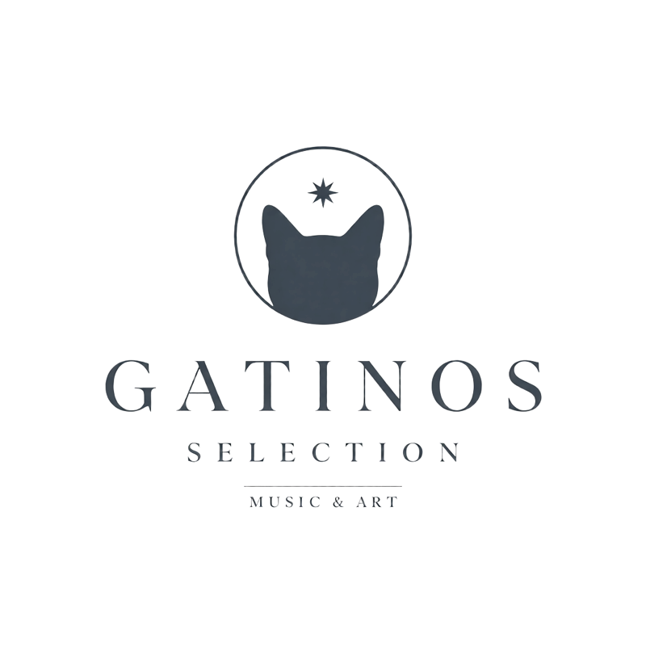

Gatinos Selection — Music & Art

Art Edition 01
Twelve ink drawings — printed on shirts.
The shop opens soon
one email, one reply, no subscription
Move your mouse across the page — illustrations are waiting beneath the paper.
Drop your email — we'll write exactly once, when Art Edition 01 goes online.

Art Edition 01
Twelve ink drawings — printed on shirts.
The shop opens soon
one email, one reply, no subscription
Move your mouse across the page — illustrations are waiting beneath the paper.